Part A
Exploring the Power of Flow Models
1.1 · Constructing Noisy Training Inputs
I mix the original image with Gaussian noise at three different times. Larger times retain more of the original image, while smaller times produce noisier inputs.
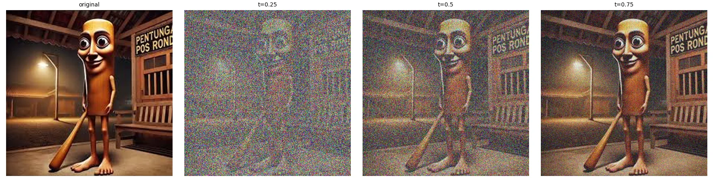
1.2 · Classical Denoising
I apply Gaussian blur to the noisy inputs as a classical denoising baseline. Smoothing reduces noise but also removes edges and fine detail.
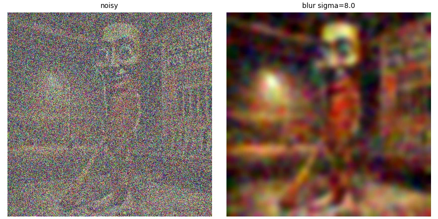
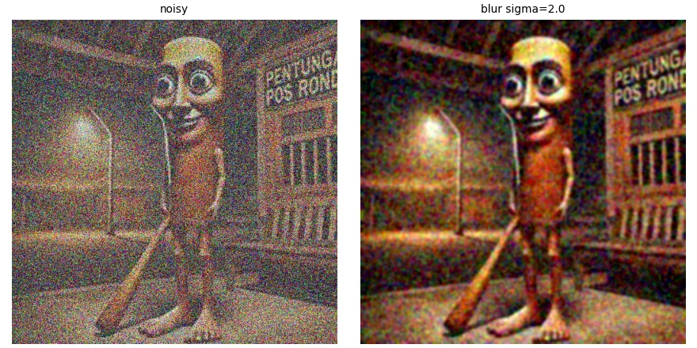
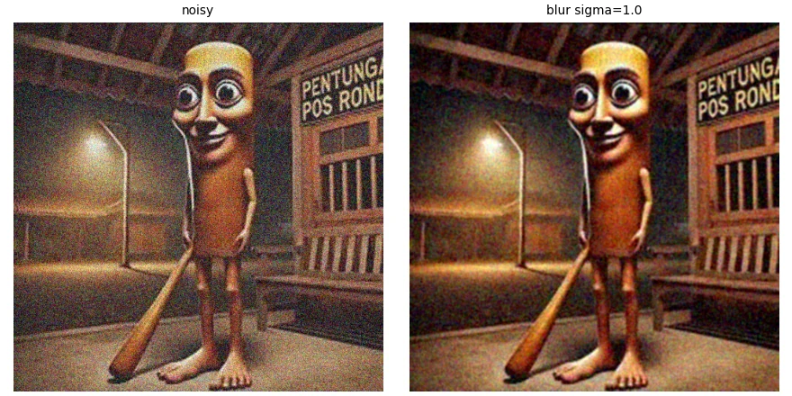
1.3 · One-Step Denoising
The pretrained model predicts a velocity from each noisy input. I use that prediction to estimate the clean image in a single update.
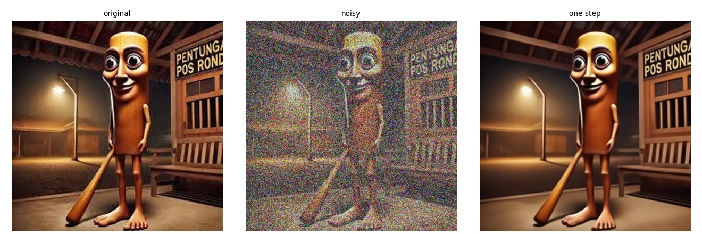
1.4 · Visualizing Velocity
These panels compare the model’s predicted update with the exact update needed to recover the original image. The heatmaps show the per-pixel RMS difference between the two updates.
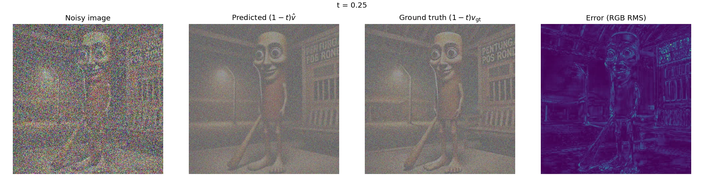
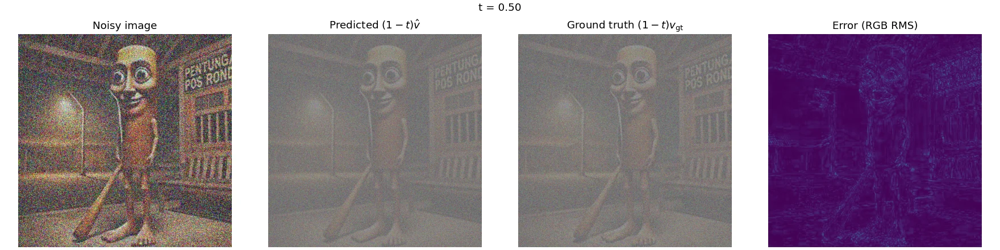
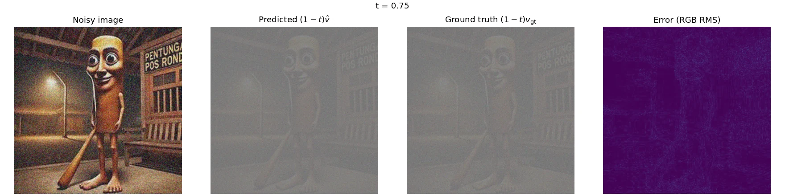
1.5 · Iterative Denoising with Euler Sampling
Euler sampling reconstructs the image through small updates, recomputing the velocity at each step. The trajectory shows the reconstruction developing, followed by a comparison with Gaussian blur and one-step denoising.
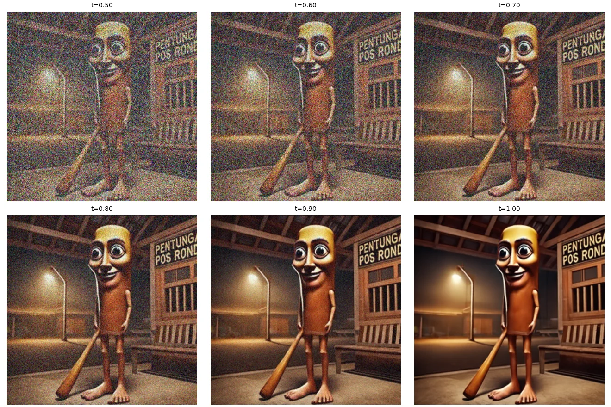
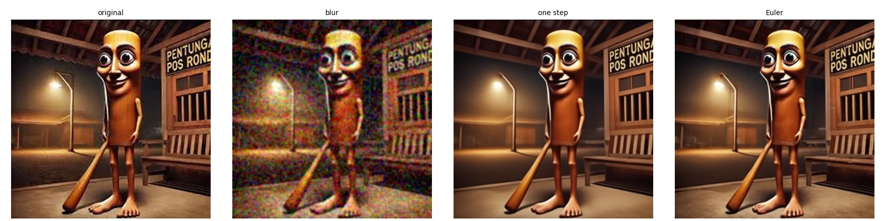
1.6 · Generating Images from Noise
I start from five independent Gaussian noise samples and run the Euler sampler to generate images. Each sample uses the prompt “a high quality photo.”


This prompt tends to favor human subjects. Images 1 and 4 have artifacts in the face, and image 3 looks a bit uncanny. Image 5 looks relatively normal.
2.1 · Classifier-Free Guidance
Classifier-free guidance combines predictions made with the text prompt and with an empty prompt. The paired samples show how guidance changes the outputs while keeping the initial noise fixed.
Each column uses the same initial noise as its counterpart without guidance. With guidance, the faces are sharper and have more consistent lighting. Both sets still favor portraits, so guidance improves image quality without changing the generic prompt’s dominant subject.
Without additional guidance · w = 0
With guidance · w = 7


3.1 · Image-to-Image Editing
I mix each input image with noise and use the flow model to reconstruct it. Smaller starting times allow larger edits, while larger starting times preserve more of the original.
Campanile
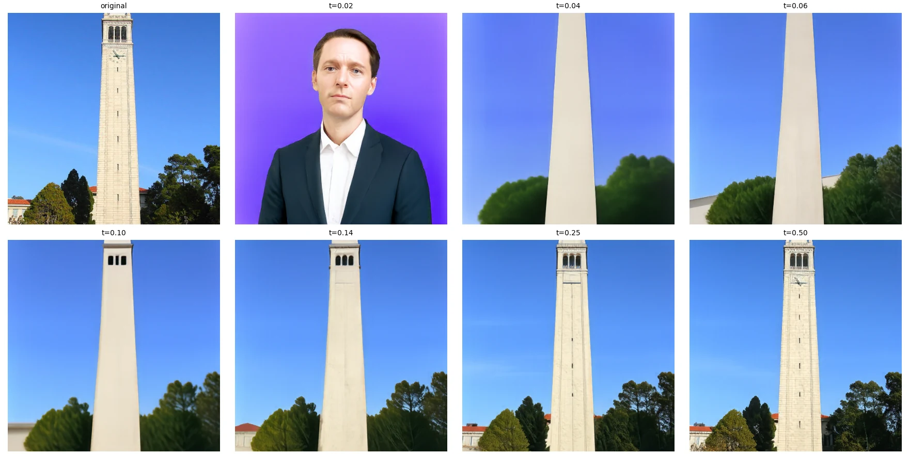
Test image 1 · Tung Tung Tung Sahur
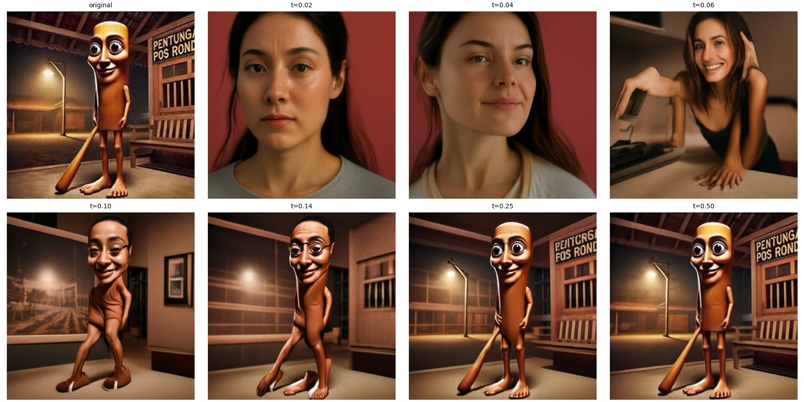
Test image 2 · Oski
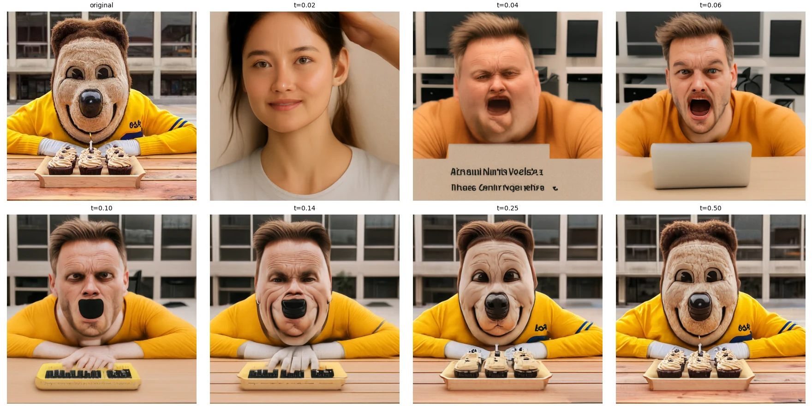
Image from the web · Cherry blossom tree
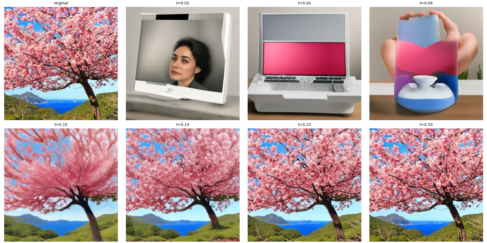
Drawing 1 · Rubik’s cube
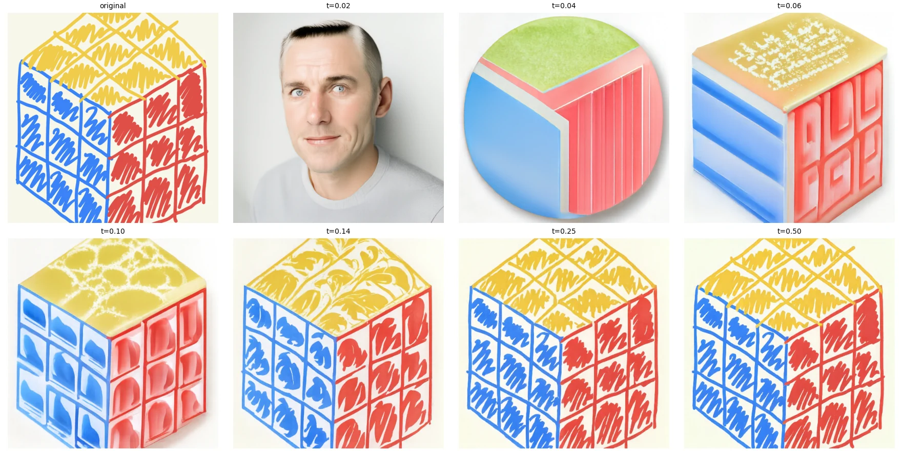
Drawing 2 · Sunflower
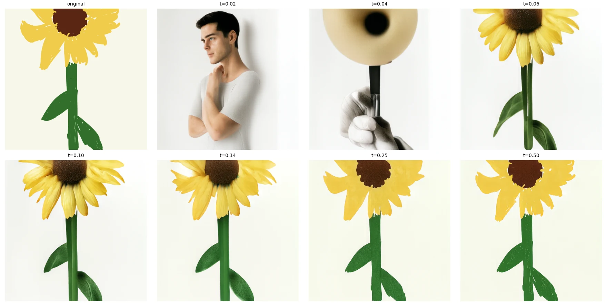
3.2 · Text-Guided Image Editing
I repeat image-to-image editing with a prompt describing a desired transformation. The starting-time sweep shows how the output balances the source image with the new text condition.
Campanile → Rocket
Prompt: a photograph of a rocket on a launch pad
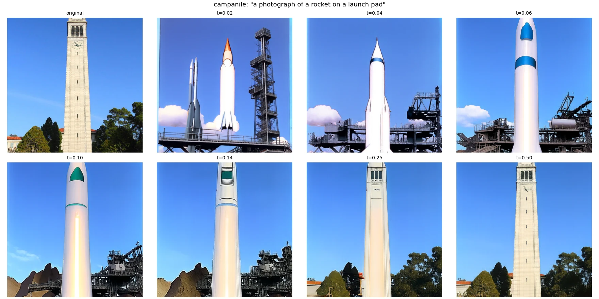
Tung Tung Tung Sahur → Sentient tree
Prompt: a photograph of an evil sentient tree in a forest
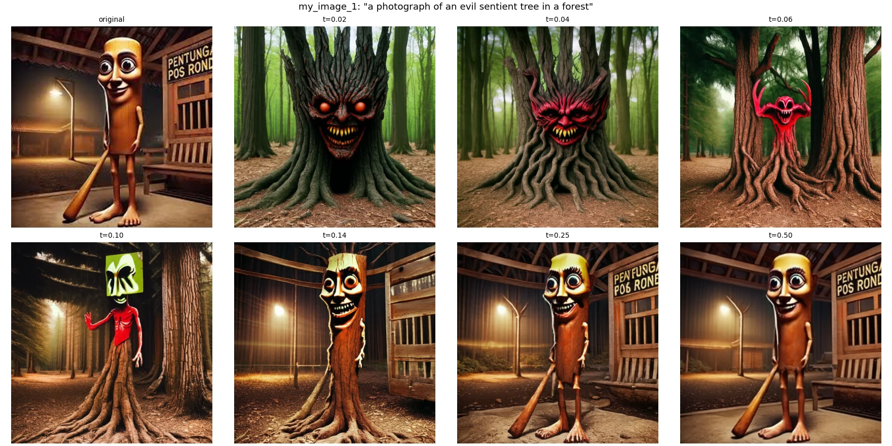
Oski → Grizzly bear
Prompt: a photograph of a realistic grizzly bear eating a fish
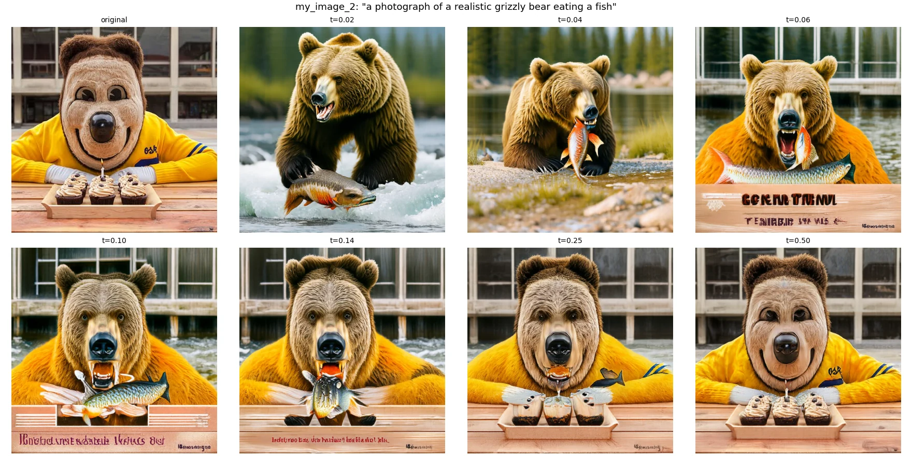
3.3 · Visual Anagrams
I combine velocity predictions for an upright image and its 180° rotation using different prompts. The goal is a single image with a different interpretation in each orientation.
Wizard / Snowy mountain · Seed 180
Upright: an oil painting of a wizard with a long beard
Rotated: an oil painting of a snowy mountain
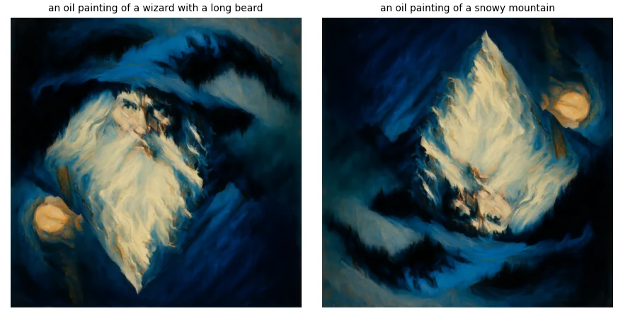
Woman / Horse · Seed 181
Upright: a stained glass image of a woman’s face
Rotated: a stained glass image of a horse
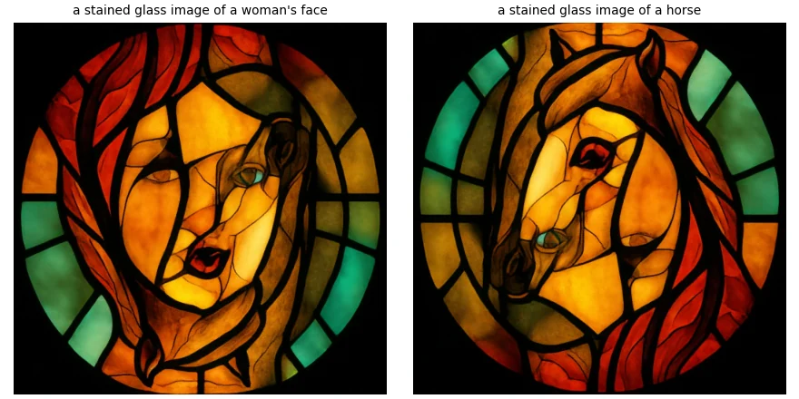
3.4 · Hybrid Images
I combine the low-frequency part of one prompt’s velocity prediction with the high-frequency part of another. Full-size and reduced views help reveal the intended close-up and distant interpretations.
Hot-air balloon / Jellyfish
Distant / low frequencies: a painting of a hot air balloon floating in the sky
Close / high frequencies: a painting of a jellyfish with long tentacles

Lion / Sunflower
Distant / low frequencies: a lithograph of a lion’s face
Close / high frequencies: a lithograph of a sunflower

Part B
Flow Matching from Scratch
1 · Training a Single-Step Denoising UNet
This experiment trains a UNet to reconstruct clean MNIST digits from noisy inputs in one step. The figures show the noise process, training loss, and reconstruction results.
1.2 · Noising MNIST
Gaussian noise is added to the same digit at increasing strengths. The sequence shows how stronger corruption obscures the underlying strokes.
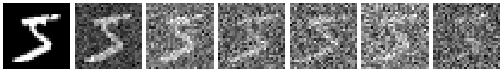
1.2.1 · Denoiser training
The model learns to predict clean digits by minimizing reconstruction mean squared error. The epoch-1 and epoch-5 comparisons show how its denoising changes with training.
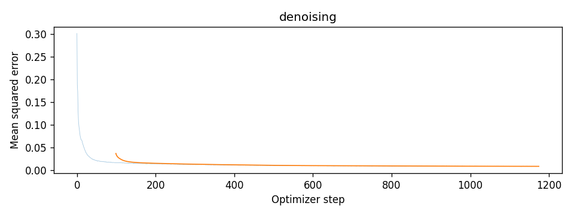
Additional training-loss plot
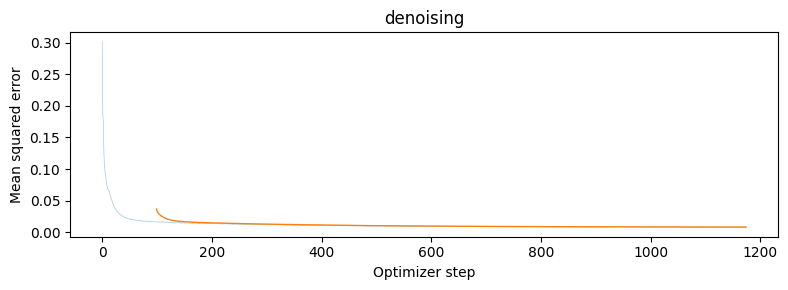
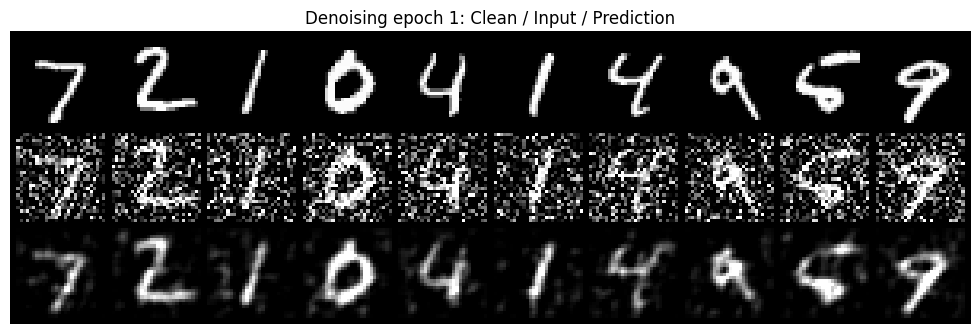
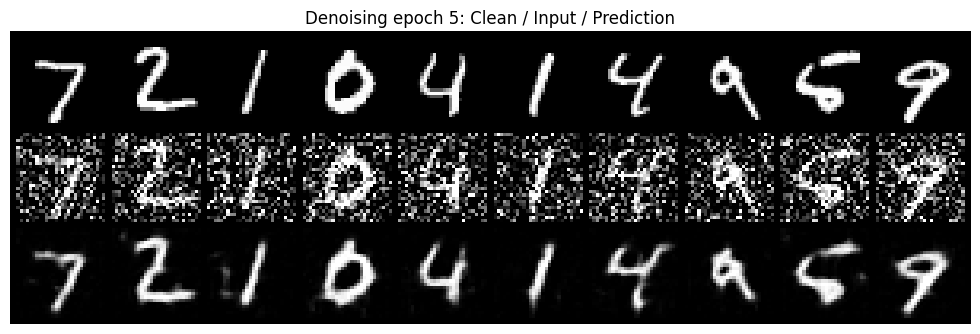
1.2.2 · Out-of-distribution testing
I test the denoiser on the same digit across different noise strengths. This checks how it behaves outside the noise condition used for training.
1.2.3 · Denoising pure noise
Here the denoiser receives pure Gaussian noise instead of a corrupted digit. The loss and checkpoint samples show what single-step reconstruction training learns when the input carries no information about its target.
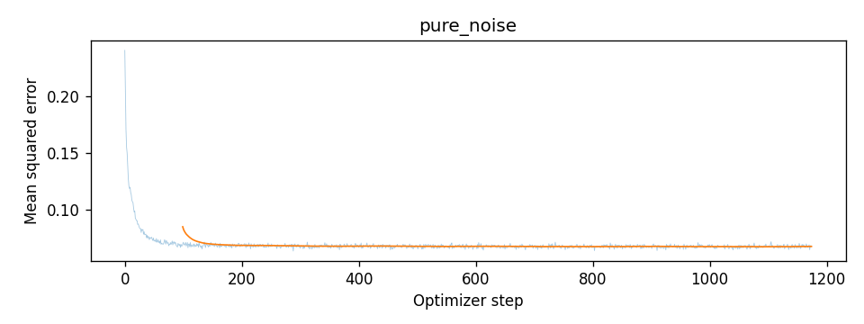
Additional training-loss plot
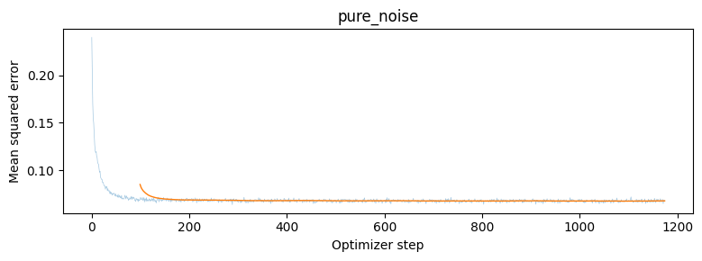
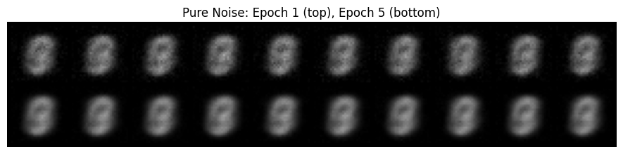
The pure-noise model produces very similar blurry shapes across different inputs at both epoch 1 and epoch 5. These outputs resemble overlapping digit strokes rather than distinct samples from classes 0–9. Because independently sampled noise contains no information about its paired target digit, the model cannot infer which digit it should reconstruct. Under an MSE objective, the optimal prediction is the conditional mean of the target. When the input and target are independent, this reduces to the average training image. This explains why training can reduce the loss while the outputs remain blurry and show little variation.
2.1–2.3 · Time-Conditioned Flow Matching
The time-conditioned UNet learns a velocity field that moves Gaussian noise toward MNIST digits. Time conditioning tells the model where an input lies along the noise-to-image path.
2.2 · Training
The model is trained to predict the velocity between a noise sample and a clean digit at randomly sampled times. The loss curve tracks its velocity-prediction error during optimization.
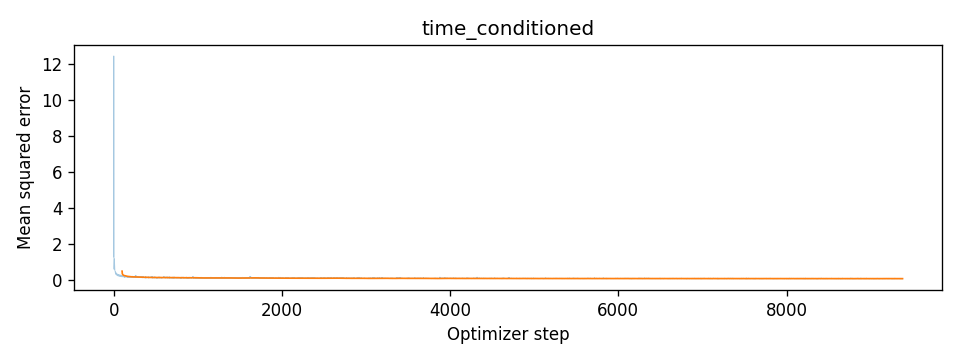
2.3 · Sampling at epochs 1, 5, and 10
Starting from noise, the model repeatedly follows its predicted velocity to generate digits. These checkpoints show how digit structure develops as training progresses.


2.4–2.6 · Class-Conditioned Flow Matching
This model also receives a digit label, giving it control over which class to generate. The grids show how class-conditioned samples develop during training.
2.5 · Training
Training uses the flow-matching objective with an additional class condition. The loss curve records how the velocity-prediction error changes over the run.
2.6 · Sampling at epochs 1, 5, and 10
The model generates four examples for each requested digit class. Comparing checkpoints shows changes in legibility and consistency within each class.
Each grid shows four instances of each digit, with columns ordered 0–9.


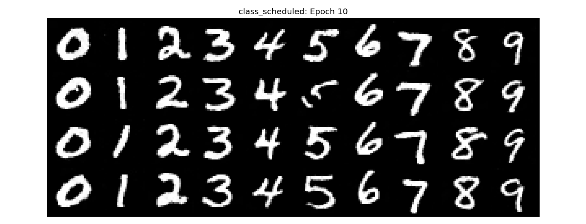
Additional class-conditioned exports

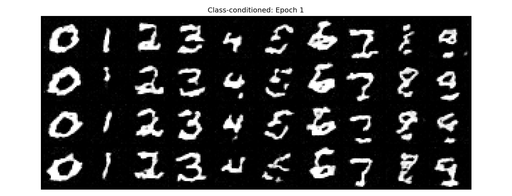

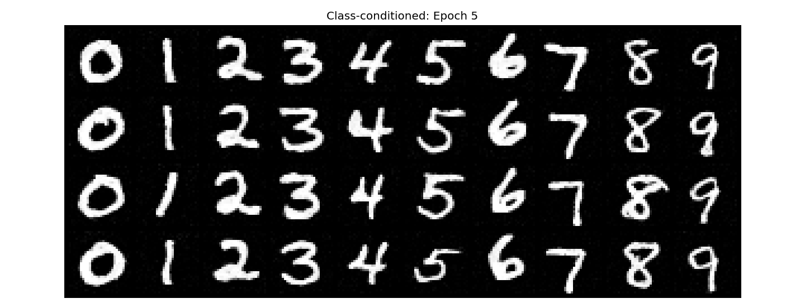

2.6 · Removing the Learning Rate Scheduler
This experiment compares class-conditioned training with and without learning-rate decay. The loss curves and final samples show whether removing the scheduler preserves similar visual quality.
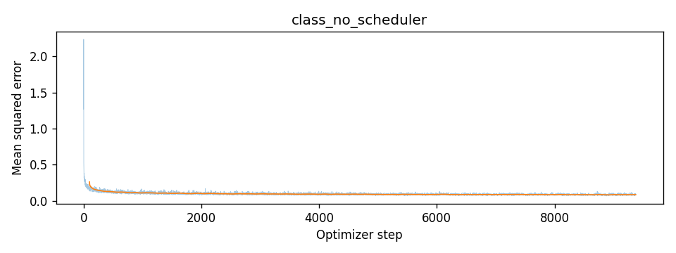

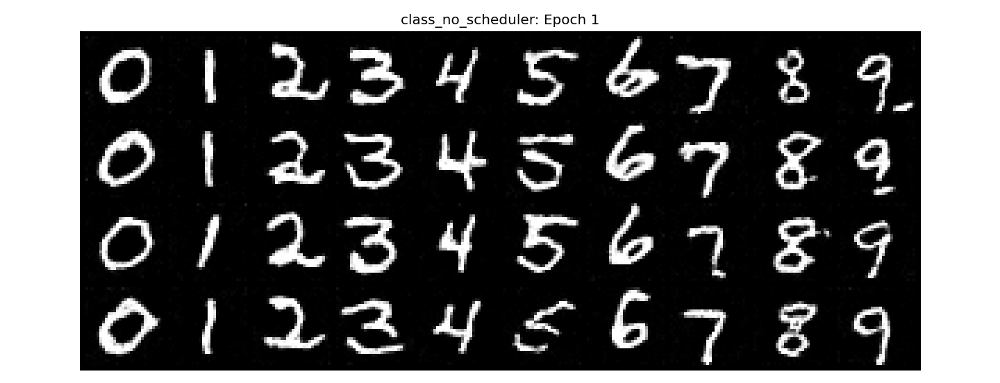

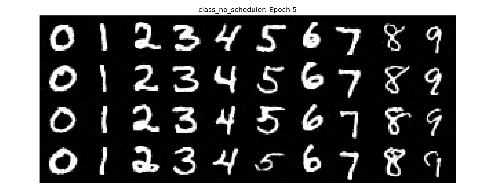

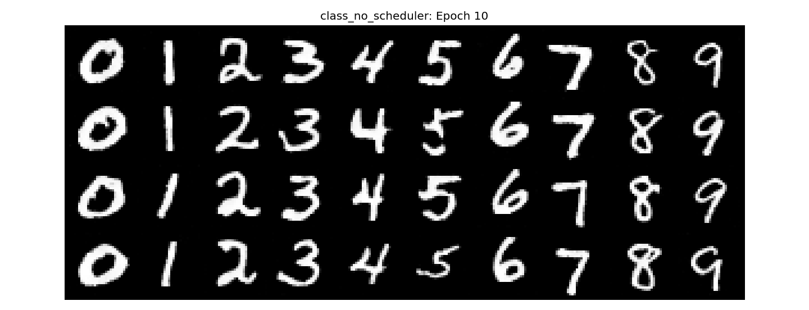
Final checkpoint comparison · epoch 10
These final grids place the scheduled and no-scheduler outputs side by side for a direct visual comparison.
To remove the exponential learning-rate scheduler, I lowered Adam’s learning rate from an initial 0.01 to a fixed 0.003. Both runs use the same initial model weights, batch size of 64, hidden dimension of 64, 10 training epochs, and class-dropout probability of 0.1; samples use 300 Euler steps, guidance scale 5.0, and seed 180.
The smaller fixed rate keeps later updates more moderate without a decay schedule. Both final grids show recognizable digits with broadly comparable visual quality, although this visual comparison does not establish identical quantitative performance.